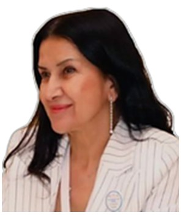

Profil
Makbulə Sabziyeva Anadolu Universitetində rus dili və ədəbiyyatı kafedrasının professoru və müdiridir. 1 iyun 1996-cı ildə Bakı Dövlət Universitetində dünya ədəbiyyatı üzrə doktorluq dərəcəsi alıb. Dissertasiya Tolstoyun Müharibə və sülh romanının Azərbaycan dilinə tərcüməsidir. Elmi rəhbər Bayram Tahirbəyovdur. 16 iyun 1984-cü ildə Moskva Dövlət Universitetində rus dili və ədəbiyyatı üzrə magistr, 1 iyun 1984-cü ildə həmin universitetdə filologiya dərəcəsi alıb. Müasir rus qadın ədəbiyyatı üzrə milli layihəyə 13 may 2016-dan 1 dekabr 2017-dək rəhbərlik edib.
İş təcrübəsi
Anadolu Universiteti, Eskişehir, Türkiyə
Professor və kafedra müdiri
Təhsil
PhD
1 June 1996Dünya ədəbiyyatı. Dissertasiya: Müharibə və sülhün Azərbaycan dilinə tərcüməsi. Elmi rəhbər: Bayram Tahirbəyov
Bakı Dövlət Universiteti
Magistr dərəcəsi
16 June 1984Rus dili və ədəbiyyatı. Müharibə və sülhün Azərbaycan dilinə tərcüməsi. Elmi rəhbər: Nikolay Liban
Moskva Dövlət Universiteti
Filologiya dərəcəsi
1 June 1984İki ixtisas, Filologiya fakültəsi
Moskva Dövlət Universiteti
Qrantlar və layihələr
- 13 May 2016–1 December 2017 — Müasir rus qadın ədəbiyyatına gender yanaşması. Əsas icraçı — Ali təhsil müəssisələri, milli layihə
Nəşrlər
Kitablar və dərsliklər
1. C. Yazılan ulusal/uluslararası kitaplar veya kitaplardaki bölümler: C1. Yazılan ulusal/uluslararası kitaplar: Metinlerarasılık Bağlamında Çeviribilim (2020)., SABZİYEVA MAKBULE, Lambert Academic Publishing, Editör:F.Betül ÜYÜMEZ, Basım sayısı:2, Sayfa Sayısı 144, ISBN:978-620-3-20077-5, Türkçe(Bilimsel Kitap)
2. Bir Daha Tolstoy Hakkında (Ещё раз о Толстом) (2010)., SABZİYEVA MAKBULE, Qanun Yayınevi, Editör:Nigar Kasımzade, Basım sayısı:1000, Sayfa Sayısı 196, ISBN:1500005104/AB022051, Rusça(Bilimsel Kitap)
Kitab fəsilləri
1. C. Yazılan ulusal/uluslararası kitaplar veya kitaplardaki bölümler: C2. Yazılan ulusal/uluslararası kitaplardaki bölümler: Sosyal ve Beşeri Bilimler. Modern Değerlendirmeler ve Araştırmalar, Bölüm adı:(Cengiz Aytmatov'un Eserlerinde Mitlerin Rolü) (2023)., SABZİYEVA MAKBULE, Lıvre De Lyon, Editör:İbrahim Serbestoğlu, Özkan Özer Keskin, Basım sayısı:1, Sayfa Sayısı 205, ISBN:978-2-38236-646-2, Türkçe(Bilimsel Kitap)
2. Doğu'dan Batı'ya Masalın Serüveni. Cilt 1, Bölüm adı:(İnsanın Gördüğü Şey, Görülebilecek Şeyin Hepsi Değildir. Etiyopya Masalları.) (2022)., SABZİYEVA MAKBULE, Nobel Akademik Yayıncılık, Editör:Tatma Ahsen TURAN, Habibe YAZICI ERSOY, Şengül DEMİREL, Basım sayısı:1, Sayfa Sayısı 447, ISBN:978-605-70764-9-6, Türkçe(Bilimsel Kitap)
3. Naslediye F.M.Dostoyevskogo v Nasionalnıx Kulturax., Bölüm adı:(Yabancı Okurların F.M.Dostoyevski'nin Eserlerindeki Onomastik Birimlerin Algılaması Üzerine) (2022)., SABZİYEVA MAKBULE, Sonçağ Akademi, Editör:Firangiz Paşayeva Yunus, Basım sayısı:1, Sayfa Sayısı 155, ISBN:978-625-8227-51-2, Türkçe(Bilimsel Kitap)
4. Doğudan Batıya Masalın Serüveni. Dünya Masalları. Cilt 2., Bölüm adı:(Eskimo Masalları: Geçmişe Uzanan Yollar) (2022)., SABZİYEVA MAKBULE, Nobel Akademik Yayıncılık, Editör:Tatma Ahsen TURAN, Habibe YAZICI ERSOY, Şengül DEMİREL, Basım sayısı:1, Sayfa Sayısı 671, ISBN:978-625-8171-03-7, Türkçe(Bilimsel Kitap)
5. Doğu'dan Batı'ya Masalın Serüveni. Dünya Masalları. Cilt 2, Bölüm adı:(Norveç Masalları: Güneş'in Doğusuna, Ay'ın Batısına Doğru) (2022)., SABZİYEVA MAKBULE, Nobel Akademik Yayıncılık, Editör:Tatma Ahsen TURAN, Habibe YAZICI ERSOY, Şengül DEMİREL, Basım sayısı:1, Sayfa Sayısı 671, ISBN:978-625-8171-03-7, Türkçe(Bilimsel Kitap)
6. Siyasi Sosyal ve Kültürel Yönleriyle Türkiye ve Rusya, Bölüm adı:(Bir Çevirinin Peşinde ”Kroyçer Sonatı”.) (2019)., SABZİYEVA MAKBULE, Berikan Yayınevi, Editör:Muhammet Mücahit KÜÇÜKYILMAZ, Basım sayısı:1, Sayfa Sayısı 800, ISBN:978-605-7634-98-6, Rusça(Bilimsel Kitap)
7. Tolstoy ve Tolstoy Hakkında, Bölüm adı:(Наследие Л.Н.Толстого в переводе на турецкий язык / Lev Tolstoy’un Mirası Türkçede) (2010)., SABZİYEVA MAKBULE, Rusya Bilimler Akademisi, Editör:Marina Şçerbakova, Basım sayısı:1, Sayfa Sayısı 545, ISBN:978-5-9208-0366-5, Rusça(Bilimsel Kitap)
8. Yasnopolyanskiy Sbornik, Bölüm adı:(L. N.Tolstoy Bakü Sahnelerinde) (2004)., SABZİYEVA MAKBULE, Yasnaya Polyana Yayınevi, Basım sayısı:1, Sayfa Sayısı 200, ISBN:1234, Rusça 8. (Bilimsel Kitap)
Rəylənmiş (peer-reviewed) jurnal məqalələri
1. SABZİYEVA MAKBULE (2023). Çeviri Eserlerinde Çevirmenin Dini Aidiyetinin Rolü. Language and Literature, 2(122), 205-209.
2. SABZİYEVA MAKBULE (2021). Azerbaycan'ın Görsel Sanatında Kitab-ı Dede Korkut. Bilimsel Eksen, 12(33), 24-34.
3. SABZİYEVA MAKBULE (2019). On the Basic Methods for the Development of Speech Activity of Foreign Students. Russian Studies Without Borders, 3(4), 60-68.
4. SABZİYEVA MAKBULE (2019). Yabancı Öğrencilere Rusçanın Öğretiminde Diyalogların Rolü. Kültür Evreni(36), 50-58.
5. SABZİYEVA MAKBULE (2019). Paul Eluard’ın Şiirlerinde Evrensellik ve Barış. Route Educational and Social Science Journal, 6(8), 135-140.
6. SABZİYEVA MAKBULE (2018). Cengiz Aytmatov’un ”Gün Uzar Yüzyıl Olur” Romanının Türkçe Çevirisi Üzerine. Language and Literature, 3(107), 302-307.
7. SABZİYEVA MAKBULE (2018). Azerbaycan’da Sözlü Edebiyat Örneği: Bayatılar. Bilimsel Eksen, 9(23), 70-78. (Yayın No: 4593797) 7. SABZİYEVA MAKBULE (2017). A.S.Puşkin’in ”Kurana Benzetmeler” Eserinin Benzetmeleri Üzerine. Dil ve Edebiyat, 1(101), 252-255., Doi: E-İSSN 2219-5513
8. SABZİYEVA MAKBULE (2014). Antik Kaynaklarda Midas. Folklor/Edebiyat, 3(79), 119-136., Doi: 22559
9. KUTLU MURAT,ERGİN ÇAĞRI,BİR FERDA,Hilmioğlu polat süheyla,Ramazan Gümral,NECAN CEYDA,KOÇYİĞİT ALİ,SAYIN KUTLU SELDA (2014). Pulmonary Mucormycosis due to Lichtheimia ramosa in a Patient with HIV Infection. Mycopathologia, 178(1-2), 111-115., Doi: 10.1007/s11046-014-9761-5
10. SABZİYEVA MAKBULE (2010). Lev Tolstoy's Comparative Assessment of the 20th Century English Writers / Tolstoy’un Gözüyle XX. Yüzyıl İngiliz Yazarları. Eskişehir Osmangazi Üniversitesi Sosyal Bilimler Dergisi, 11(2), 61-73.
11. SABZİYEVA MAKBULE (2002). Mir Muhsin Nevvab. Türksoy Dergisi(3), 31-38.
12. SABZİYEVA MAKBULE (2001). Sibirya Türklerinin Etnik Tarihine Dair. Türk Dünyası Dergisi(21), 3-6.
13. SABZİYEVA MAKBULE (1998). Перевод - область литературоведения / Tercüme Bir Edebiyat Bilimidir. Dil ve Edebiyat, 109-111.
14. SABZİYEVA MAKBULE (1994). L.N. Tolstoy’un ‘Savaş ve Barış’ Romanında Tercüme Olunmayan Öğelerin Azerbaycan Diline Çevirisi Üzerine. Dil ve Edebiyat, 3(21), 109-112.
15. Çeviribilim Düzleminde Metinlerarasılık (2015)., SABZİYEVA MAKBULE, Eser Ofset Yayın Basım, Editör:ÜYÜMEZ F.Betül, Basım sayısı:1, Sayfa Sayısı 130, ISBN:978-605-63654-1-6, Türkçe(Araştırma (Tez Hariç) Kitabı)
16. Kutsal Döngü/Священный кругооборот (2012)., SABZİYEVA MAKBULE, Krug Yayınevi, Editör:Dergaçeva İrina, Basım sayısı:1, Sayfa Sayısı 79, ISBN:1234, Rusça(Kitap Tercümesi)
17. Boğazdaki Mutlu Çocuk Kuzguncuk/Кузгунчук – счастливое дитя на Босфоре (2012)., SABZİYEVA MAKBULE, Krug Yayınevi, Editör:Dergaçeva İrina, Basım sayısı:1, Sayfa Sayısı 123, ISBN:1234, Rusça(Kitap Tercümesi)
18. Yergök (2011)., SABZİYEVA MAKBULE, Krug Yayınevi, Editör:Dergaçeva İrina, Basım sayısı:1, Sayfa Sayısı 126, ISBN:1234, Rusça(Kitap Tercümesi)
19. Эльмар и друзья / Elmar ve Arkadaşları (2010)., SABZİYEVA MAKBULE, Verlag Anadolu, Basım sayısı:1, Sayfa Sayısı 16, ISBN:1234, Rusça(Kitap Tercümesi)
20. Кошачьий остров / Kedi Adası (2010)., SABZİYEVA MAKBULE, Verlag Anadolu, Basım sayısı:1, Sayfa Sayısı 30, ISBN:1234, Rusça(Kitap Tercümesi)
21. Эльмар и цвета / Elmar ve Renkler (2010)., SABZİYEVA MAKBULE, Verlag Anadolu, Basım sayısı:1, Sayfa Sayısı 16, ISBN:1234, Rusça(Kitap Tercümesi)
22. Город на ветру / Rüzgârdaki Şehir (2010)., SABZİYEVA MAKBULE, Verlag Anadolu, Basım sayısı:1, Sayfa Sayısı 30, ISBN:1234, Rusça(Kitap Tercümesi)
23. Дни Айше / Ayşe’nin Günleri (2010)., SABZİYEVA MAKBULE, Krug Yayınevi, Editör:Dergaçeva İrina, Basım sayısı:1, Sayfa Sayısı 215, ISBN:1234, Rusça(Kitap Tercümesi)
24. Karacaoğlan Rus Dilinde (2008)., SABZİYEVA MAKBULE, Kültür Ajans Yayınları, Editör:Hayrettin İVGİN, Basım sayısı:1, Sayfa Sayısı 160, ISBN:978-975-8951-25-3, Rusça(Kitap Tercümesi)
25. Rus Masalları (2008)., SABZİYEVA MAKBULE, Morpa, Editör:CENGİZ Gülsüm, Basım sayısı:1, Sayfa Sayısı 64, ISBN:0107-34-006548, Türkçe(Kitap Tercümesi)
26. Eskimo Masalları (2007)., SABZİYEVA MAKBULE, Morpa, Editör:CENGİZ Gülsüm, Basım sayısı:1, Sayfa Sayısı 48, ISBN:0107-34-006548, Türkçe(Kitap Tercümesi)
27. Çin Masalları (2007)., SABZİYEVA MAKBULE, Morpa, Editör:CENGİZ Gülsüm, Basım sayısı:1, Sayfa Sayısı 48, ISBN:0107-34-006548, Türkçe(Kitap Tercümesi)
28. Angola Masalları (2007)., SABZİYEVA MAKBULE, Morpa, Editör:CENGİZ Gülsüm, Basım sayısı:1, Sayfa Sayısı 48, ISBN:0107-34-006548, Türkçe(Kitap Tercümesi)
29. Norveç Masalları (2007)., SABZİYEVA MAKBULE, Morpa, Editör:CENGİZ Gülsüm, Basım sayısı:1, Sayfa Sayısı 48, ISBN:0107-34-006548, Türkçe(Kitap Tercümesi)
30. Kızılderili Masalları (2007)., SABZİYEVA MAKBULE, Morpa, Editör:CENGİZ Gülsüm, Basım sayısı:1, Sayfa Sayısı 48, ISBN:0107-34-006548, Türkçe(Kitap Tercümesi)
31. Порог / Eşik (2007)., SABZİYEVA MAKBULE, Mütercim Yayınevi, Editör:Cəfərov Telman, Basım sayısı:1, Sayfa Sayısı 104, ISBN:1234, Rusça(Kitap Tercümesi)
32. Azerbaycan Masalları (2007)., SABZİYEVA MAKBULE, Morpa, Editör:CENGİZ Gülsüm, Basım sayısı:1, Sayfa Sayısı 48, ISBN:0107-34-006548, Türkçe(Kitap Tercümesi)
33. Avustralya Masalları (2007)., SABZİYEVA MAKBULE, Morpa, Editör:CENGİZ Gülsüm, Basım sayısı:1, Sayfa Sayısı 48, ISBN:0107-34-006548, Türkçe(Kitap Tercümesi)
Konfrans məqalələri və tezisləri
1. B. Uluslararası bilimsel toplantılarda sunulan ve bildiri kitaplarında (proceedings) basılan bildiriler: SABZİYEVA MAKBULE (1998). Köroğlu Rusya’da. Bolu’da Halk Kültürü ve Köroğlu Uluslararası Sempozyumu (Tam Metin Bildiri/Sözlü Sunum)
2. SABZİYEVA MAKBULE (2000). Yunus Emre Rusya’da. 8. Uluslararası Türk Halk Edebiyatı Semineri, 201-206. (Tam Metin Bildiri/Sözlü Sunum)
3. SABZİYEVA MAKBULE (2004). Azerbaycan Fıkralarının Özellikleri. 3. Uluslararası Türk Medeniyetlerinde Sözlü Kültür Geleneği: Fıkralar’ Sempozyumu, 156-161. (Tam Metin Bildiri/Sözlü Sunum)
4. SABZİYEVA MAKBULE (2005). Hayrettin İvgin’in Kıbrıs’la İlgili Çalışmaları. XI. Uluslararası Edebiyat Şöleni (Tam Metin Bildiri/Sözlü Sunum)
5. SABZİYEVA MAKBULE (2006). Karacaoğlan Rus Dilinde. Uluslararası Karacaoğlan Sempozyumu, 64-69. (Tam Metin Bildiri/Sözlü Sunum)
6. на турецкий и азербайджанский языки / L.N. Tolstoy’un Eserlerinin Türk ve Azerbaycan Dillerine Çevirileri Üzerine. Rus Edebiyatı Çevirmenlerinin 2. Uluslararası Sempozyumunun, 43-49. (Tam Metin Bildiri/Sözlü Sunum)
7. SABZİYEVA MAKBULE (2008). Türk Halklarının Masallarına Karşılaştırmalı Bir Bakış. Türk Halkları Çocuk Edebiyatı Uluslararası Kongresi, 845-848. (Tam Metin Bildiri/Sözlü Sunum)
8. SABZİYEVA MAKBULE (2009). “Kazan Tarihi”nde Avrasyalılık Düşünceleri. "XI-XXI. Yüzyıllar Rus Edebiyatında Doğu ve Batı” Uluslararası Sempozyumu, 117-123. (Tam Metin Bildiri/Sözlü Sunum)
9. SABZİYEVA MAKBULE (2009). К вопросу перевода некоторых особенностей стиля Л.Н.Толстого на турецкий язык / Tolstoy’un Üslup Özelliklerinin Türkçedeki Çevirilere Yansıması Üzerine (Tolstoy’un Gençlik Dönemi Eserlerinin Çevirileri Üzerine). 180. Doğum Yıldönümünde L.N. Tolstoy’un Yazınsal Mirası Uluslararası Bilim Sempozyumu, 145-156. (Tam Metin Bildiri/Sözlü Sunum)
10. SABZİYEVA MAKBULE (2009). Первые переводчики Толстого на турецкий язык / Tolstoy’u Türkçeye İlk Çevirenler. Çağdaş Azerbaycan’da Rus Dili ve Edebiyatı Uluslararası Sempozyumu (Özet Bildiri/Sözlü Sunum)
11. SABZİYEVA MAKBULE (2010). 11.-12. Yüzyıl Rus Destanlarında Kıpçaklar. III. Uluslararası Karşılaştırmalı Edebiyatbilimi Kongresi, 1, 411-417. (Tam Metin Bildiri/Sözlü Sunum)
12. SABZİYEVA MAKBULE (2010). Azerbaycan’da Oyun Yazarlığı Geleneği. Interplay Uluslararası Genç Oyun Yazarları Festivali (Tam Metin Bildiri/Sözlü Sunum)
13. SABZİYEVA MAKBULE (2021). XIX. Yüzyılda Şuşa'nın Edebi Meclisleri. 4th International Nowruz Conference on Scientific Research, 1(1), 408-415. (Tam Metin Bildiri/Sözlü Sunum)
14. SABZİYEVA MAKBULE (2021). "Çevrilemeyenlerin" Çeviri Sorunu. 4.Uluslararası Türk-Rus Dünyası Akademik Araştırmalar Kongresi, 1(1), 147-151. (Tam Metin Bildiri/Sözlü Sunum)
15. SABZİYEVA MAKBULE (2021). О работе над переводом русских былин на турецкий язык. V. Uluslararası Rus Dili Eğitimi Konferansı, 1(1), 11-15. (Tam Metin Bildiri/Sözlü Sunum)
16. SABZİYEVA MAKBULE (2022). Anadolu Üniversitesinde Rusça Eğitimi (Ob İzuçenii Russkogo Yazıka v Anatoliyskom Universitete). 5. Uluslararası Türk-Rus Dünyası Akademik Araştırmalar Kongresi, 1, 153-161. (Tam Metin Bildiri/Sözlü Sunum)
17. SABZİYEVA MAKBULE (2022). Ortak Üslup Özellikleri Bağlamında Cengiz Aytmatov'un ve Elçin Efendiyev'in Eserleri. 2.Uluslararası Karadeniz Modern Bilimsel Araştırmalar Kongresi, 1, 535-539. (Tam Metin Bildiri/Sözlü Sunum)
18. SABZİYEVA MAKBULE (2022). Konu Oluşturma Arketipi: Masallar. Anadolu 11.Uluslararası Sosyal Bilimler Kongresi, 2, 1912-1917. (Tam Metin Bildiri/Sözlü Sunum)
19. SABZİYEVA MAKBULE (2023). Lev Tolstoy'un "İlyas" Eserinde Sembollerin Rolü. Rus Edebiyatında ve Kültüründe İslam ve Müslümanlar, 1(1), 19-24. (Tam Metin Bildiri/Sözlü Sunum)
20. SABZİYEVA MAKBULE (2023). Роль интертекста в обучении иностранному языку. VI Uluslararası Rus Dili Eğitimi Sempozyumu, 79-83. (Tam Metin Bildiri/Sözlü Sunum)
21. SABZİYEVA MAKBULE (2023). Lev Tolstoy'un "İlyas" Öyküsünün Türkçeye Çevirisi Üzerine. Uluslararası 6. Usbilim Uygulamalı ve Sosyal Bilimler Sempozyumu, 1(1), 42-47. (Tam Metin Bildiri/Sözlü Sunum)
22. SABZİYEVA MAKBULE (2023). Öğrencilerle Tolstoy'u Çeviriyoruz: Lev Tolstoy "Yeni Alfabe". Uluslararası 6. Usbilim Uygulamalı ve Sosyal Bilimler Sempozyumu, 1(1), 36-41. (Tam Metin Bildiri/Sözlü Sunum)
23. SABZİYEVA MAKBULE (2023). Tolstoy'un "Savaş ve Barış" Romanında Napolyon İmgesi. 6. Uluslararası Türk-Rus Dünyası Akademik Araştırmalar Kongresi, 14-19. (Tam Metin Bildiri/Sözlü Sunum)
24. SABZİYEVA MAKBULE (2019). Bir Ömrün Hikayesi. İnternational Euroasia Congress on Scientific Researches and Recent Trends-V, 1, 152-158. (Tam Metin Bildiri/Sözlü Sunum)
25. SABZİYEVA MAKBULE (2019). Bir Çevirinin Peşinde ”Kroyçer Sonatı”. II. Uluslararası Türk-Rus Dünyası Akademik Araştırmalar Kongresi, 485-495. (Tam Metin Bildiri/Sözlü Sunum)
26. SABZİYEVA MAKBULE (2019). Yabancı Dil Derslerinde Metin Çalışmaları. Türkiye’de Rusça Eğitmenlerinin III. Uluslararası Sempozyumu, 1-117. (Tam Metin Bildiri/Sözlü Sunum)
27. Bilimleri ve Sosyal Bilimler Sempozyumu, 6(8), 135-140. (Tam Metin Bildiri/Sözlü Sunum) (Yayın No: 5741160) 27. SABZİYEVA MAKBULE (2019). Edebiyatta İki İsim: Hallac-i Mansur ve Nesimi. History and Knowledge: The Paradigm of Studying The Language of The Ancient Heritage, 71-74. (Tam Metin Bildiri/Sözlü Sunum)
28. SABZİYEVA MAKBULE (2019). Nevruz, Türklerin Geleneksel Bayramı. 24.Uluslararası Türk Kültürü Sempozyumu, 40-46. (Tam Metin Bildiri/Sözlü Sunum)
29. SABZİYEVA MAKBULE (2019). Cengiz Aytmatov’un İlk Hikayelerinin Türkçeye Çevirileri. Modern Trends in Architecture and Construction: Energy Efficiency, Energy Saving, BIM Technologies, Problems of the Urban Enviroment, 494-497. (Tam Metin Bildiri/Sözlü Sunum)
30. SABZİYEVA MAKBULE (2018). Azerbaycan’ın Görsel Sanatında Kitab-i Dede Korkut. Türk Halklarının Türkçe İlk Yazılı Eserleri, 80-90. (Tam Metin Bildiri/Sözlü Sunum)
31. SABZİYEVA MAKBULE (2018). Lev Tolstoy’un ”Çocukluk.Yeniyetmelik. Gençlik.” Eserlerinin Türkçeye Çevirileri Üzerine. The International scientific-theoretical conference ”Problems of Poetics and Prosody VIII”, 142-146. (Tam Metin Bildiri/Sözlü Sunum)
32. SABZİYEVA MAKBULE (2018). Dünya Halklarının Masallarında Yolculuğun Anlamı. Indıa and Russia Cross-Cultural Synergies, 83-84. (Tam Metin Bildiri/Sözlü Sunum)
33. SABZİYEVA MAKBULE (2018). Anadolu Üniversitesi Rus Dili ve Edebiyatı Bölümünün Hazırlık Sınıfında Eğitim Sistemi. I. Rus Dili Eğitimi Çalıştayı, 3-5. (Tam Metin Bildiri/Sözlü Sunum) (Yayın No: 4593915) 34. SABZİYEVA MAKBULE (2017). Yabancı Dil Öğretimine Metodolojik Yaklaşım. Uluslararası Eğitim ve Değerler Sempozyumu, 47-49. (Özet Bildiri/Sözlü Sunum)
34. SABZİYEVA MAKBULE (2017). Alevi-Bektaşi Edebiyatında Nesimi’nin Yeri. ”Nesimi 600” III. Uluslararası Bilimsel Sempozyum, 25-29. (Tam Metin Bildiri/Davetli Konuşmacı)
35. SABZİYEVA MAKBULE (2017). Bir Kitabın Yayınlanması Üzerine. VI. Uluslararası Bilimsel Uygulamalı Sempozyum, 182-190. (Tam Metin Bildiri/Sözlü Sunum)
36. SABZİYEVA MAKBULE (2017). Günümüz Gagavuzların Yaşamında Türk Gelenekleri. I. Uluslararası Türklerin Dünyası Sosyal Bilimler Sempozyumu, 249-253. (Tam Metin Bildiri/Sözlü Sunum) (Yayın No: 3940207) 38. SABZİYEVA MAKBULE (2016). Metinlerarası Unsurların Çevirisi Üzerine. Müasir Dilçiliğin Aktüel Problemleri, 100-101. (Özet Bildiri/Sözlü Sunum)
37. SABZİYEVA MAKBULE (2016). Radloff un Türk Ağızları İçin Sözlük Denemesi nin Türk Sözlük Tarihindeki Yeri ve Önemi. III.Uluslararası Sözlükbilim Sempozyumu, 93-95. (Özet Bildiri/Sözlü Sunum)
38. SABZİYEVA MAKBULE (2016). Rus Şairi Osip MANDELSHTAM ın Şiirlerinde Kültürlerarasılık. VI. Uluslararası Karşılaştırmalı Edebiyat Bilim Kongresi, 528-536. (Tam Metin Bildiri/Sözlü Sunum)
39. SABZİYEVA MAKBULE (2016). Unutulanlar Mehmet Sadık AĞABEYZADE. III.Uluslararası Türk Dünyası Araştırmaları Sempozyumu, 223-226. (Tam Metin Bildiri/Sözlü Sunum)
40. SABZİYEVA MAKBULE (2016). Rus Destanlarında Türkler. Oljas Suleymenov ve Milli İdrak Uluslararası Sempozyumu, 87-90. (Tam Metin Bildiri/Sözlü Sunum)
41. Oljas Suleymanov ve Rus Türk Kültürel İlişkileri Uluslararası Sempozyumu Bildiri Özet Kitabı (2015)., SABZİYEVA MAKBULE, Eser Ofset Basım Yayın, Editör:Prof.Dr. Zinaida SABİTOVA, Basım sayısı:1, Rusça(Kitap Tercümesi) (Yayın No: 2328754) 3. Bir Gençlik Şarkısı/Песня юности (2013)., SABZİYEVA MAKBULE, Krug Yayınevi, Editör:Dergaçeva İrina, Basım sayısı:1, Sayfa Sayısı 123, ISBN:1234, Rusça(Kitap Tercümesi)
42. SABZİYEVA MAKBULE (1988). Вопросы литературы / Edebiyat Meseleleri. Azerbaycan Dilli Mekteplerde Rus Dili ve Edebiyatı, 1(465), 6-10. (Kontrol No: 7677023) 1. E. Ulusal bilimsel toplantılarda sunulan ve bildiri kitaplarında SABZİYEVA MAKBULE (1991). L.N. Tolstoy’un ‘Savaş ve Barış’ Romanının Kurgusu Üzerine. Azerbaycan Cumhuriyetinin XIII İlmi Konferansı, 94-95. (Özet Bildiri/Sözlü Sunum)
43. SABZİYEVA MAKBULE (1991). L.N. Tolstoy'un Yazarlık Üslubu Üzerine. İki Dilin Gelişiminin Güncel Problemleri” İlmi Konferansı, 141-142. (Özet Bildiri/Sözlü Sunum)
44. SABZİYEVA MAKBULE (1993). Rus Dilsel Öğelerin Azerbaycan Diline Tercümesi. Azerbaycan Cumhuriyetinin XIV İlmi Konferansı, 142-143. (Özet Bildiri/Sözlü Sunum)
45. SABZİYEVA MAKBULE (1993). Rus Kültürel Ögelerin Azerbaycan Dilinde İfadesine Dair. Azerbaycan Cumhuriyetinin XIV İlmi Konferansı’ (Özet Bildiri/Sözlü Sunum)
46. SABZİYEVA MAKBULE (2007). Dünya Masallarında Örnek Tiplemeler. III. Sakarya Çocuk ve Gençlik Edebiyatı Günleri/Söyleşi (Tam Metin Bildiri/Sözlü Sunum)